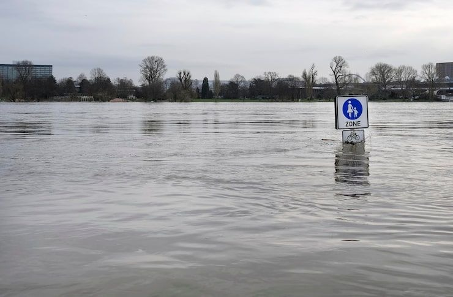

DisasterLens turns citizen-captured photographs into geotagged, classified damage reports — helping responders understand what is happening on the ground in real time.
DisasterLens bridges the critical intelligence gap between frontline witnesses and emergency operations command.
Upload a photograph from the ground. The browser captures device GPS coordinates, orientation metadata, and timestamp directly in-client.
Identify hazard type and estimated severity. Multi-modal computer vision parses the imagery to isolate structural failures, fire lines, or flood levels.
Plot the geotagged report for responders. Verified incident vectors are immediately published to the live GIS command grid for real-time triage and dispatch.
Every report is categorized into distinct hazard signatures with low, medium, or high severity ratings to guide emergency resource allocation.
Detect visible flames, smoke and fire-related damage across structures, vehicles, and wildland-urban interface boundaries.
Identify damaged buildings, collapsed structures, cracks and debris fields that threaten civilian safety or block egress corridors.

Flood / Water DamageIdentify standing water, flooding, waterlines and water-related damage across arterial roads, underpasses, and residential zones.
Knowledge is your best defense. Watch the situational protocols below and learn critical survival tactics for immediate response to major environmental and structural hazards.
Your photograph immediately equips emergency dispatchers and first responders with actionable, geotagged damage intelligence.